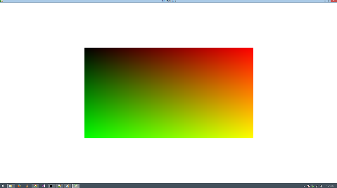

So I’ve been making a program the last couple days using the UrhoPlayer and writing the code in angelscript. I wanted to test it on another machine (also a windows PC), and ran into an issue with d3dcompiler_47.dll . So I figured I would recompile the UrhoPlayer to use OpenGL (using -DURHO3D_OPENGL build option). It compiles fine, but when I use the sample scripts with the UrhoPlayer (which all work fine with the DX build) they are completely broken. They start, but the materials are orange/green gradients and the scene is barely constructed, and in odd ways (how depends on the sample, but none of them are created correctly/as expected)
Here is the physics sample, DX on the left (normal scene), OpenGL on the right (blank white screen with a gradient on a quad)

Not sure what’s going on with this.